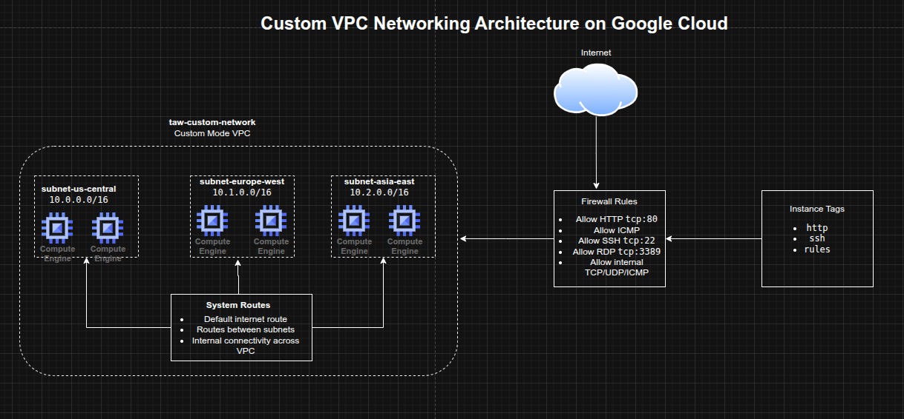

Designing a Custom VPC Network and Firewall Rules on Google Cloud
Designing a Custom VPC Network and Firewall Rules on Google Cloud
Timeline: December 2025
Role: Cloud Engineer
Skills: Google Cloud VPC, Subnets, Firewall Rules, Network Tags, Routes, Regions and Zones, Compute Engine Networking
Project Summary
This project focused on building a custom Virtual Private Cloud (VPC) network in Google Cloud and configuring the foundational networking controls required for secure connectivity. The implementation involved reviewing the default network model, creating a custom-mode VPC, defining regional subnetworks, and applying targeted firewall rules for HTTP, ICMP, SSH, RDP, and internal communication.
The project demonstrated core Google Cloud networking concepts including global VPC design, regional subnet segmentation, route behavior, and tag-based firewall targeting, which form the basis for more advanced cloud architectures.
Objectives
- Review the default Google Cloud network and firewall behavior
- Create a custom-mode VPC network
- Define subnetworks across multiple regions
- Configure firewall rules for web, admin, and internal traffic
- Use instance tags to scope firewall access
- Understand route behavior in Google Cloud networking
Architecture Overview
The architecture consisted of:
- A custom-mode VPC named
taw-custom-network - Three regional subnetworks:
subnet-us-centralsubnet-europe-westsubnet-asia-east
- Automatically created system routes for:
- internet egress
- inter-subnet communication
- Firewall rules allowing:
- HTTP access from the internet
- ICMP
- SSH
- RDP
- internal TCP/UDP/ICMP communication between subnets
- instance tags used to apply rules selectively to workloads

Implementation & Highlights
1. Reviewing the Default Network
- Examined the default VPC network created automatically in a new Google Cloud project
- Reviewed its auto-mode subnet behavior and preconfigured firewall rules
- Compared default networking behavior with the more controlled custom VPC model :contentReference[oaicite:1]{index=1}
2. Designing a Custom VPC
- Created a custom-mode VPC named
taw-custom-network - Chose custom mode to control subnet creation manually instead of relying on auto-created regional subnets
- Used the VPC as a globally scoped network foundation for resources across multiple regions :contentReference[oaicite:2]{index=2}
3. Creating Regional Subnets
- Defined three subnetworks in different regions
- Used separate private IP ranges for each subnet:
10.0.0.0/1610.1.0.0/1610.2.0.0/16
- Established regional segmentation while keeping all subnets connected through the same global VPC :contentReference[oaicite:3]{index=3}
4. Configuring Firewall Rules
- Created targeted firewall rules for:
- HTTP (
tcp:80) - ICMP
- SSH (
tcp:22) - RDP (
tcp:3389) - internal communication across all subnets
- HTTP (
- Applied least-privilege thinking by scoping some rules with tags instead of exposing all instances broadly :contentReference[oaicite:4]{index=4}
5. Using Network Tags
- Used instance tags such as:
httpsshrules
- Applied firewall policies selectively based on instance role
- Reinforced a cleaner and more scalable firewall administration model compared with broad network-wide rules :contentReference[oaicite:5]{index=5}
6. Understanding Routes and Connectivity
- Reviewed automatically created routes for internet access and subnet-to-subnet communication
- Connected the role of routes and firewall policies in controlling actual traffic flow
- Built a practical foundation for understanding more advanced network architectures such as shared VPCs and peering :contentReference[oaicite:6]{index=6}
Design Decisions
- Used a custom-mode VPC to retain full control over subnetwork layout
- Distributed subnets across multiple regions to reflect Google Cloud’s global VPC model
- Used RFC1918 private address ranges for subnet design
- Used firewall rules with tags to target intended workloads instead of opening access unnecessarily
- Kept internal communication explicit through a dedicated firewall rule covering the defined subnet ranges
Results & Impact
- Successfully designed and configured a custom Google Cloud VPC
- Demonstrated practical use of:
- regional subnetting
- firewall rule creation
- tag-based access control
- route awareness
- Strengthened understanding of how Google Cloud networking differs from traditional on-premises and default-cloud networking models
- Built a strong foundation for future projects involving load balancers, GKE, hybrid networking, and multi-tier cloud environments
Tools & Technologies Used
- Google Cloud VPC – Global virtual networking
- Subnets – Regional IP segmentation
- Firewall Rules – Traffic control
- Network Tags – Selective rule targeting
- Routes – Connectivity paths within the VPC and to the internet
- Compute Engine Networking – Instance-level attachment and traffic policy context
Outcome
This project demonstrates the ability to design a custom Google Cloud network foundation using VPCs, subnetworks, routes, and firewall controls. It highlights practical skills in cloud networking, segmentation, and access control, which are essential for cloud engineering, infrastructure, and security-focused roles.